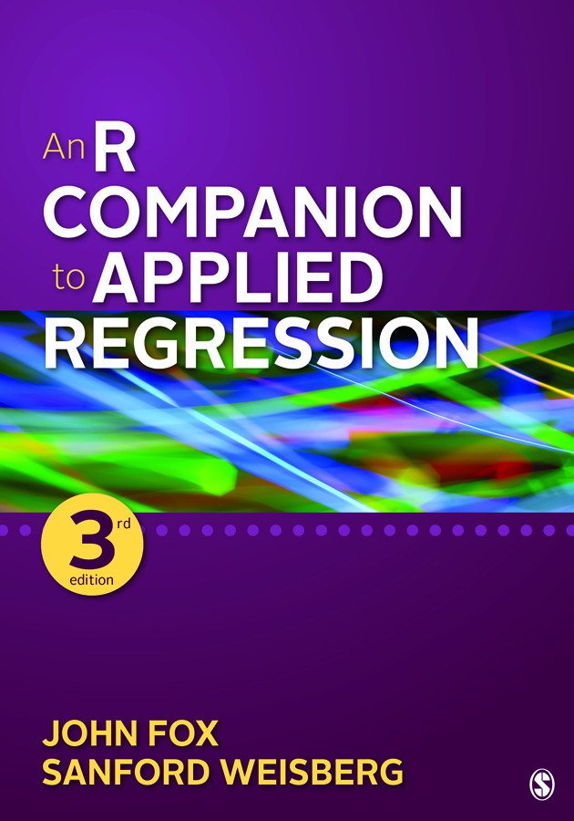

|

|
An R Companion to Applied Regression is a broad introduction to the R statistical computing environment in the context of applied regression analysis. The book provides a step-by-step guide to using the free statistical software R, and emphasizes integrating statistical computing in R with the practice of data analysis. The R packages car and effects, written to facilitate the application and interpretation of regression analysis, are extensively covered in the book. See the Sage Publications website for the table of contents and sample chapters, to buy the book, and more R scripts, data files, and other downloadable files Errata and updates (as of 2020-05-17) The supplemental and experimental carEx package can be installed from R-Forge Hex
stickers for the car and effects
packages |